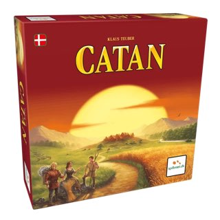
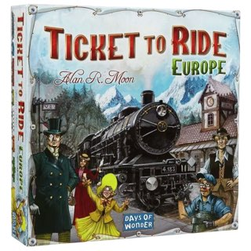
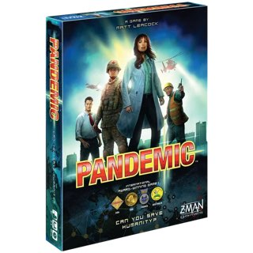

SPILCAFÉEN
En ny digital spiloversigt, der hjælper gæster med hurtigt at finde det rette brætspil efter lokation, antal spillere, tid og genre.
Løsningen kombinerer et legende visuelt udtryk med en enkel, responsiv og mere tilgængelig brugeroplevelse.
PROJEKTBESKRIVELSE
Opgaven var at videreudvikle Spilcaféens digitale spiloversigt, så caféens gæster lettere kan gå på opdagelse i det store udvalg af spil. Brugeren kan søge direkte eller filtrere efter blandt andet sted, spilletid, antal spillere, sværhedsgrad og genre.
Hvert spil vises som et tydeligt kort med billede og nøgleinformation. Fra kortet kan brugeren åbne en detaljeret visning med beskrivelse, regler, bedømmelse, hyldeplacering og tilgængelighed.
DESIGN & INTERAKTION
Det røde og sorte farveunivers tager afsæt i Spilcaféens identitet, mens store spilbilleder, afrundede kort og tydelige filterknapper gør oplevelsen overskuelig. Layoutet tilpasser sig både mobil og desktop.
Filtrering og søgning opdaterer resultaterne direkte. Udvalgte filtre vises samlet, kan nulstilles og giver løbende feedback, så brugeren hele tiden kan se, hvilke valg der påvirker spiloversigten.
WEBTILGÆNGELIGHED
Løsningen er forbedret med beskrivende labels, statusbeskeder til skærmlæsere og aria-pressed på filterknapper. Spildetaljer vises i et semantisk dialogelement, som kan betjenes med tastaturet.
Fokus, tydelige tilstande og mulighed for at lukke dialogen med Escape gør den centrale søge- og filteroplevelse nemmere at bruge for flere.
PROGRAMMERING
Spiloversigten er bygget med HTML, CSS og JavaScript. Spildata indlæses fra JSON, hvorefter JavaScript genererer kortene, kombinerer søgning og filtre og styrer dialogen med spildetaljer.
VÆRKTØJER


